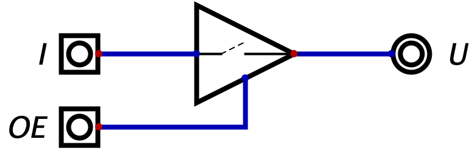
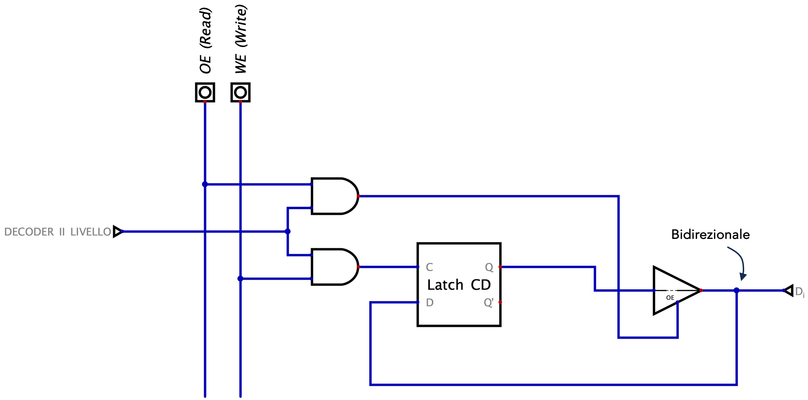
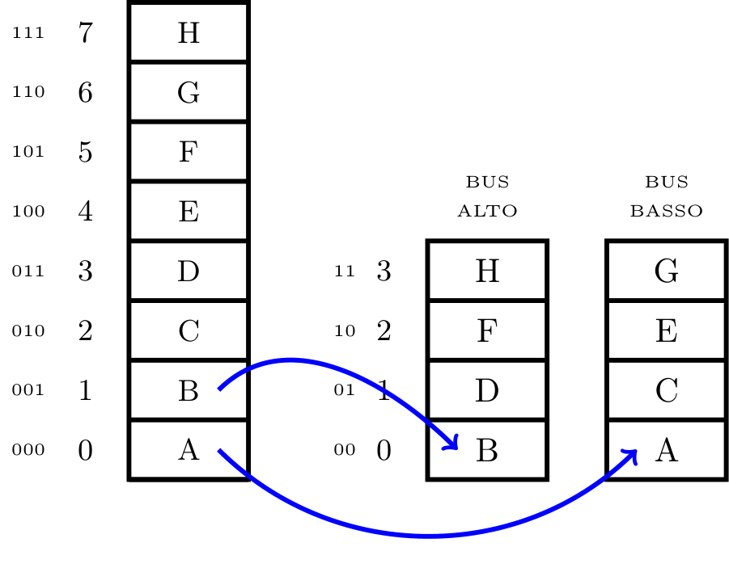
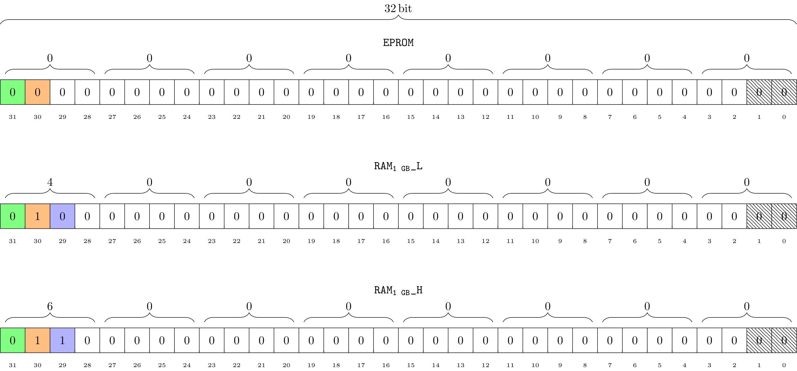

Definizione - Elaborazione delle informazioni e interazione con l'esterno
Gran parte dei sistemi esistenti ha come obiettivo l'elaborazione delle informazioni: anche la quasi totalità dei sistemi elettronici digitali ha questo obiettivo.
Come per tutti i sistemi di questo tipo, una funzionalità essenziale per questi sistemi è l'interazione con l'esterno per acquisire e/o fornire informazione.
Come per tutti i sistemi di questo tipo, una funzionalità essenziale per questi sistemi è l'interazione con l'esterno per acquisire e/o fornire informazione.
Definizione - Architetture per elaboratori
Esistono diverse architetture di elaborazione in base alle diverse necessità, ad esempio:
- sistemi general purpose;
- sistemi embedded;
- ecc.
Definizione - Modello di Von-Neumann
Il modello di Von-Neumann descrive un'architettura generale in cui il funzionamento è descritto da una sequenza di istruzioni (un programma) memorizzate su un supporto di memoria.
Il sistema di elaborazione può essere schematizzato in modo astratto come una Rete Sequenziale Sincrona (RSS) a cui è aggiunta un'unità di controllo che dopo aver interrogato (fetch) la memoria per le istruzioni del programma, governa la parte combinatoria del microprocessore attraverso appositi segnali di controllo.
A livello di massima astrazione, il funzionamento dell'intero sistema può essere descritto da due stati in continua alternanza:
Il sistema di elaborazione può essere schematizzato in modo astratto come una Rete Sequenziale Sincrona (RSS) a cui è aggiunta un'unità di controllo che dopo aver interrogato (fetch) la memoria per le istruzioni del programma, governa la parte combinatoria del microprocessore attraverso appositi segnali di controllo.
A livello di massima astrazione, il funzionamento dell'intero sistema può essere descritto da due stati in continua alternanza:
- lo stato di Instruction Fetch (IF) in cui si "prelevano" le istruzioni da eseguire (indicato da un apposito registro detto Program Counter, PC);
- lo stato di Execute (EX).
Definizione - CISC e RISC
Le CPU possono eseguire istruzioni come somme, moltiplicazioni, confronti, letture e scritture in memoria e/o verso altri dispositivi, ecc.
In base al set di istruzioni codificate, le CPU si dividono in:
Inoltre, ad oggi, anche le architetture CISC (ancora necessarie per la grande quantità di software preesistente) sono realizzate internamente come RISC.
In base al set di istruzioni codificate, le CPU si dividono in:
- RISC (Reduced Instruction Set Computer), dove le istruzioni sono poche e semplici. Tali CPU sono caratterizzate da reti logiche semplici ed efficienti;
- CISC (Complex Instruction Set Computer), dove le istruzioni sono molte e complesse, comportando reti logiche più complesse e più grandi.
Inoltre, ad oggi, anche le architetture CISC (ancora necessarie per la grande quantità di software preesistente) sono realizzate internamente come RISC.
Definizione - Linguaggi per CPU
Indipendentemente dal tipo della CPU, le istruzioni sono in forma binaria rendendole quindi di difficile comprensione. Per questo motivo si utilizza il linguaggio assembly che sarà poi trasformato in binario grazie ad apposite Look Up Table (LUT). I linguaggi di programmazione ad alto livello non sono altro che istruzioni più complesse (di alto livello, appunto) poi convertite in istruzioni più semplici per la CPU (attraverso il compilatore, ad esempio).
Definizione - Comunicazione nel modello di Von-Neumann
Nel modello di Von-Neumann le istruzioni risiedono in memoria, ma per leggere (e scrivere) la CPU utilizza segnali predefiniti temporizzati da un preciso ciclo di bus.
Esistono infatti tre tipi di bus di comunicazione tra CPU, Memoria e le varie periferiche:
Esistono infatti tre tipi di bus di comunicazione tra CPU, Memoria e le varie periferiche:
- l'Address Bus (BA[...]) unidirezionale (da CPU a memoria e periferiche);
- il Data Bus (BD[...]) bidirezionale;
- il Control Bus composto dai segnali:
- Read e Write (da CPU a memoria e periferiche);
- Ready e Int (da memoria e periferiche a CPU).
Definizione - Ciclo di bus
L'evoluzione temporale di alcuni segnali che interagiscono con una CPU si definiscono come ciclo di bus.
L'unico modo per interagire con un sistema di questo tipo, consiste nel seguire le regole descritte da tale ciclo ed indicate dal costruttore nel relativo data sheet.
Ad ogni ciclo di bus si ha quindi che nell'Address Bus è presente l'indirizzo della memoria o della periferica, nel Data Bus le informazioni da leggere o da scrivere e il Control Bus fornisce informazioni sull'operazione da svolgere o sullo stato della periferiche.
Un ciclo di bus può durare più cicli di clock e può anche terminare in maniera asincrona.
L'unico modo per interagire con un sistema di questo tipo, consiste nel seguire le regole descritte da tale ciclo ed indicate dal costruttore nel relativo data sheet.
Ad ogni ciclo di bus si ha quindi che nell'Address Bus è presente l'indirizzo della memoria o della periferica, nel Data Bus le informazioni da leggere o da scrivere e il Control Bus fornisce informazioni sull'operazione da svolgere o sullo stato della periferiche.
Un ciclo di bus può durare più cicli di clock e può anche terminare in maniera asincrona.
Osservazioni personali - Ad esempio - Ciclo di bus di lettura
Consideriamo un prototipo di ciclo di bus di lettura
Si ha quindi che la CPU emette l'indirizzo sull'Address Bus e negli istanti successivi la sua intenzione di lettura (segnale Read). A questo punto, la CPU aspetta il segnale di Ready per poter "ritirare" il dato immesso dalla periferica (sul Data Bus).
Osservazioni personali - Ad esempio - Ciclo di bus di scrittura
Consideriamo un prototipo di ciclo di bus di scrittura  Si ha quindi che la CPU emette l'indirizzo sull'Address Bus e negli istanti successivi la sua intenzione di scrittura (segnale Write). A questo punto, la CPU aspetta il segnale di Ready per poter "inserire" il dato nella periferica (già caricato in precedenza sul Data Bus).
Si ha quindi che la CPU emette l'indirizzo sull'Address Bus e negli istanti successivi la sua intenzione di scrittura (segnale Write). A questo punto, la CPU aspetta il segnale di Ready per poter "inserire" il dato nella periferica (già caricato in precedenza sul Data Bus).
Definizione - Indirizzamento e spazio di indirizzamento
La CPU "emette" sull'Address Bus diversi indirizzi: in particolare si ha che se il bus è composto da \( 20\) bit, lo spazio di indirizzamento sarà composto da \( 2^{20}\) indirizzi. Ipotizzando inoltre la grandezza del Data Bus di \( 1 \mathrm{ \, Byte }\) (scelta anacronistica ma conveniente per i ragionamenti), si avrà (nel caso dei \( 20\) bit di indirizzo) uno spazio di indirizzamento di \( 1 \mathrm{ \, MB }\).
Dato tale spazio, affinchè un dispositivo fisico (ad esempio una memoria) possa essere accessibile, deve essere mappato nello spazio di indirizzamento, ovvero deve essergli assegnata una finestra di indirizzi.
Dato tale spazio, affinchè un dispositivo fisico (ad esempio una memoria) possa essere accessibile, deve essere mappato nello spazio di indirizzamento, ovvero deve essergli assegnata una finestra di indirizzi.
Osservazioni personali - Ad esempio
Considerando di avere una memoria da \( 64 \mathrm{ \, MB }\) (\( 2^6 \cdot 2^{20} \mathrm{ \, Byte }\), ovvero \( 2^36 \mathrm{ \, Byte }\)) ed un Address Bus di \( 1 \mathrm{ \, Byte }\), per poter indirizzare tale memoria saranno necessari almeno \( 2^36\) indirizzi (ad ogni "dato" un indirizzo).
Definizione - Driver 3-state
Il driver 3-state è una rete logica che è caratterizzata da:
Esso è quindi descritto dalla seguente tabella della verità: dove Z indica lo stato di alta impedenza.
dove Z indica lo stato di alta impedenza.
Si ha quindi che con l'ingresso OE = 1, ovvero tale componente diventa "trasparente", altrimenti "blocca" il segnale
tale componente diventa "trasparente", altrimenti "blocca" il segnale

- un ingresso I;
- un ingresso OE (Output Enable);
- un'uscita U
Esso è quindi descritto dalla seguente tabella della verità:
Si ha quindi che con l'ingresso OE = 1, ovvero
Definizione - Decoder di I e II livello
La CPU per poter scrivere e leggere dei dati, emette l'indirizzo della cella di memoria interessata: a questo punto tale indirizzo viene fornito in input ad un decoder di I livello che in base al valore dei bit più significativi di tale indirizzo, abiliterà o disabiliterà (grazie ad un driver 3-state) un apposito ingresso del dispositivo (detto "Chip Select" o "Chip Enable", CS o CE).
A questo punto, l'indirizzo è ulteriormente decodificato da un decoder di II livello (interno al dispositivo) che "collegherà" la parte corretta della memoria.
A questo punto, l'indirizzo è ulteriormente decodificato da un decoder di II livello (interno al dispositivo) che "collegherà" la parte corretta della memoria.
Definizione - Struttura di una generico dispositivo collegato alla CPU
Considerando un sistema caratterizzato da \( n\) bit di dati, un generico dispositivo compatibile sarà caratterizzato da:
- un segnale di Chip Select (CS) del dispositivo;
- un bus di \( k\) bit utili per la decodifica di II livello;
- un segnale di controllo per indicare la lettura ed uno per indicare la scrittura;
- un bus di \( n\) bit di dati.
Definizione - Memorie EPROM
Le memorie EPROM (Erasable Programmable Read Only Memory), sono memorie non volatili a sola lettura (durante l'utilizzo).
Esse sono caratterizzate dai segnali:
Per motivi storici, tali memorie hanno solitamente capacità il cui valore è multiplo di \( 2\) (ad esempio \( 32\mathrm{ \, KB }\), \( 64\mathrm{ \, KB }\), \( 128\mathrm{ \, KB }\), eccetera).
Esse sono caratterizzate dai segnali:
- CE (Chip Enable), per abilitare o meno il dispositivo;
- OE (Output Enable), per connettere "l'output" del dispositivo con il Bus Dati (sarà quindi attivo nel caso della lettura).
Per motivi storici, tali memorie hanno solitamente capacità il cui valore è multiplo di \( 2\) (ad esempio \( 32\mathrm{ \, KB }\), \( 64\mathrm{ \, KB }\), \( 128\mathrm{ \, KB }\), eccetera).
Definizione - Memorie SRAM
Le memorie SRAM (Static Random Access Memory), sono memorie volatili leggibili e scrivibili. Si differenziano dalle DRAM (Dynamic RAM) per la tecnologia impiegata (le DRAM utilizzano condensatori in modo da essere meno energivore).
Esse sono caratterizzate dai segnali:
Per motivi storici, tali memorie hanno solitamente capacità distanti un multiplo di \( 4\) (ad esempio \( 8\mathrm{ \, KB }\), \( 32\mathrm{ \, KB }\), \( 128\mathrm{ \, KB }\)).
A livello strutturale, una singolo bit di una SRAM (la \( j\)-esima cella composta da \( k\) bit) è così composto in particolare si ha che
Esse sono caratterizzate dai segnali:
- CE (Chip Enable), per abilitare o meno il dispositivo;
- OE (Output Enable), per connettere "l'output" del dispositivo con il Bus Dati (attivo quindi nel caso della lettura);
- WE (Write Enable), per connettere "l'input" del dispositivo con il Bus Dati (attivo quindi nel caso della scrittura).
Per motivi storici, tali memorie hanno solitamente capacità distanti un multiplo di \( 4\) (ad esempio \( 8\mathrm{ \, KB }\), \( 32\mathrm{ \, KB }\), \( 128\mathrm{ \, KB }\)).
A livello strutturale, una singolo bit di una SRAM (la \( j\)-esima cella composta da \( k\) bit) è così composto

- il segnale DECODER II LIVELLO sarà fornito dal decoder in base all'indirizzo e abiliterà le \( k\) celle (dato che ad ogni indirizzo è composto da \( k\) celle) del \( j\)-esimo indirizzo.
- il segnale OE rende (nel caso la cella sia all'indirizzo desiderato) il driver 3-state trasparente permettendo quindi l'inserimento sul Data Bus;
- il segnale WE rende (nel caso la cella sia all'indirizzo desiderato) il driver 3-state bloccante e collega il dato presente sul Data Bus all'ingresso D del Latch (che sovrascriverà il dato presente in precedenza).
Definizione - Integrato notevole 244 - Driver 3-state a \( 8\) bit
L'integrato notevole 244 è l'equivalente di \( 8\) driver 3-state paralleli ma, a differenza dei singoli componenti, sono presenti solo due ingressi di OE che "piloteranno" \( 4\) bit ciascuno.
Tale integrato sarà quindi composto, oltre che dai due ingressi di ENABLE, da \( 8\) ingressi e \( 8\) uscite.
Tale integrato sarà quindi composto, oltre che dai due ingressi di ENABLE, da \( 8\) ingressi e \( 8\) uscite.
Definizione - Integrato notevole 245 - Driver 3-state bidirezionale a \( 8\) bit
L'integrato notevole 245 è un driver 3-state bidirezionale composto da \( 8\) "celle" del tipo  In base al valore dell'ingresso DIR, si avrà che un certo ingresso/uscita sarà attivo mentre l'altro sarà bloccato (quindi sarà possibile la comunicazione da A a B e da B ad A).
In base al valore dell'ingresso DIR, si avrà che un certo ingresso/uscita sarà attivo mentre l'altro sarà bloccato (quindi sarà possibile la comunicazione da A a B e da B ad A).
Il segnale di EN si presenta solitamente negato (EN') e permette di creare l'impedenza in entrambi i sensi.
Il segnale di EN si presenta solitamente negato (EN') e permette di creare l'impedenza in entrambi i sensi.
Definizione - Integrato notevole 373 - Latch a \( 8\) bit con uscita 3-state
L'integrato notevole 373 è l'equivalente di \( 8\) Latch CD sulla cui uscita è posto un driver 3-state.
Tale integrato sarà quindi composto, oltre che dagli \( 8\) ingressi di dato e le \( 8\) uscite anche da un ingresso C (condiviso) e un segnale per abilitare l'uscita (condiviso) solitamente negato (OE').
Tale integrato sarà quindi composto, oltre che dagli \( 8\) ingressi di dato e le \( 8\) uscite anche da un ingresso C (condiviso) e un segnale per abilitare l'uscita (condiviso) solitamente negato (OE').
Definizione - Registro edge-triggered a \( k\) bit
Un registro a \( k\) bit è una rete sequenziale sincrona in grado di memorizzare un dato di \( k\) bit.  Esso è caratterizzato da:
Esso è caratterizzato da:
- un ingresso CLK per il segnale di clock;
- un bus di \( k\) segnali sincroni in ingresso IN[\( k-1, \ldots, 0\)];
- un ingresso sincrono WE ("Write Enable") per permettere la sovrascrittura del dato precedentemente memorizzato (con WE = 0 ad ogni fronte di clock rimane il segnale memorizzato in precedenza);
- un segnale asincrono A_RESET ("Asynchronous RESET") che, se attivo, pone a \( 0\) tutti i bit memorizzati.
- se WE = 1, il flip-flop deve memorizzare l'ingresso IN;
- se WE = 0, il flip-flop deve memorizzare il valore precedente, ovvero Q.
Definizione - Integrato notevole 374 - Registro edge-triggered a \( 8\) bit con uscita 3-state
L'integrato notevole 374 è l'equivalente di un registro edge-triggered a \( 8\) bit sulla cui uscita è posto un driver 3-state.
Tale integrato sarà quindi composto, oltre che dagli \( 8\) ingressi di dato e le \( 8\) uscite anche dal segnale di clock CK anche da un ingresso per abilitare l'uscita solitamente negato (OE').
Tale integrato sarà quindi composto, oltre che dagli \( 8\) ingressi di dato e le \( 8\) uscite anche dal segnale di clock CK anche da un ingresso per abilitare l'uscita solitamente negato (OE').
Definizione - Mappatura di dispositivi
Affinchè la CPU possa comunicare con un dispositivo, è necessario che esso sia mappato nello spazio di indirizzamento. Si ha inoltre che tali finestre di indirizzi da assegnare devono essere contigue.
Si consideri un sistema ad \( n\) bit ed un dispositivo con \( k\) bit di indirizzo interno (ovvero che "andranno in pasto" al decoder di II livello). In totale, tali dispositivi occuperanno M = \( 2^k\) indirizzi nello spazio di indirizzamento. Un dispositivo si dice mappato ad un certo indirizzo A se gli indirizzi del dispositivo sono compresi tra A e A + (M - 1).
Si dice inoltre che un certo indirizzo è allineato se A è multiplo di M, ovvero se
È possibile quindi dividere un generico indirizzo \( X\) per il dispositivo in due parti \[ X = \alpha \mid \beta \] La parte \( \beta\) è composta dai \( k\) bit del dispositivo, mentre la parte \( \alpha\) è composta dagli \( n - k\) bit.
In questo modo si avrà quindi che la decodifica della parte \( \alpha\) è quella detta di I livello (a carico del progettista del sistema) mentre quella della parte \( \beta\) è a carico del dispositivo.
Una decodifica si dice completa se nella decodifica si utilizzano tutti i \( n - k\) bit di \( \alpha\). Se non è questo il caso, si dice che la decodifica è semplificata.
Si consideri un sistema ad \( n\) bit ed un dispositivo con \( k\) bit di indirizzo interno (ovvero che "andranno in pasto" al decoder di II livello). In totale, tali dispositivi occuperanno M = \( 2^k\) indirizzi nello spazio di indirizzamento. Un dispositivo si dice mappato ad un certo indirizzo A se gli indirizzi del dispositivo sono compresi tra A e A + (M - 1).
Si dice inoltre che un certo indirizzo è allineato se A è multiplo di M, ovvero se
M modulo A = 0
In questo caso, se un dispositivo è allineato, il primo indirizzo a lui corrispondente (\( A\)) avrà i \( k\) bit meno significativi (degli \( n\) totali) a \( 0\). È possibile quindi dividere un generico indirizzo \( X\) per il dispositivo in due parti \[ X = \alpha \mid \beta \] La parte \( \beta\) è composta dai \( k\) bit del dispositivo, mentre la parte \( \alpha\) è composta dagli \( n - k\) bit.
In questo modo si avrà quindi che la decodifica della parte \( \alpha\) è quella detta di I livello (a carico del progettista del sistema) mentre quella della parte \( \beta\) è a carico del dispositivo.
Una decodifica si dice completa se nella decodifica si utilizzano tutti i \( n - k\) bit di \( \alpha\). Se non è questo il caso, si dice che la decodifica è semplificata.
Esempio - Mappatura di dispositivi
Considerando un sistema con un Address Bus di \( 16 \mathrm{ \, bit }\) e un Data Bus di \( 8 \mathrm{ \, bit }\), scrivere le espressioni di decodifica di I livello completa e semplificata nei casi: È necessario quindi scrivere le espressioni corrispondenti ad \( \alpha\). La decodifica completa si ha che deve utilizzare entrambi i bit di \( \alpha\): in questo caso si avrà che l'espressione completa per il chip select è data da
Consideriamo ora il secondo caso, ovvero il dispositivo di memoria da \( 8\mathrm{ \, KB }\) mappato all'indirizzo esadecimale 0000h. In questo caso, si ha che tale dispositivo necessita di \( 2^3 \cdot 2^{10} = 2^{13}\) indirizzi e si ha che la decodifica di I livello potrà coinvolgere solo i \( 16 - 13 = 3\) bit di indirizzo più significativi. Considerando quindi il primo indirizzo 0000h si ha che
Considerando invece l'ultimo caso, in cui i dispositivi devono convivere, si ha che le espressioni di decofica completa saranno identiche ai casi precedenti, ovvero
- è presente un solo dispositivo di memoria da \( 16 \mathrm{ \, KB }\) mappato all'indirizzo esadecimale 8000h;
- è presente un solo dispositivo di memoria da \( 8 \mathrm{ \, KB }\) mappato all'indirizzo esadecimale 0000h;
- sono presenti un dispositivo di memoria A da \( 16 \mathrm{ \, KB }\) mappato all'indirizzo esadecimale 8000h e un dispositivo di memoria B da \( 8 \mathrm{ \, KB }\) mappato all'indirizzo esadecimale 0000h.

CSCOMPLETA = BA[15] \( \cdot\) BA[14]'
mentre quella semplice (minima) è CSSEMPLICE = 1
in quanto è presente un solo dispositivo (si ha quindi che corrisponde a tutto lo spazio di indirizzamento). Consideriamo ora il secondo caso, ovvero il dispositivo di memoria da \( 8\mathrm{ \, KB }\) mappato all'indirizzo esadecimale 0000h. In questo caso, si ha che tale dispositivo necessita di \( 2^3 \cdot 2^{10} = 2^{13}\) indirizzi e si ha che la decodifica di I livello potrà coinvolgere solo i \( 16 - 13 = 3\) bit di indirizzo più significativi. Considerando quindi il primo indirizzo 0000h si ha che
Le espressioni corrispondenti ad \( \alpha\) saranno quindi
CSCOMPLETA = BA[15]' \( \cdot\) BA[14]' \( \cdot\) BA[13]'
e CSSEMPLICE = 1
per gli stessi motivi del caso precedente. Considerando invece l'ultimo caso, in cui i dispositivi devono convivere, si ha che le espressioni di decofica completa saranno identiche ai casi precedenti, ovvero
CS_ACOMPLETA = BA[15] \( \cdot\) BA[14]'
CS_BCOMPLETA = BA[15]' \( \cdot\) BA[14]' \( \cdot\) BA[13]'
mentre per la decodifica semplice si ha che è possibile considerare le differenze nei bit più significativi, ovvero si ha che CS_BCOMPLETA = BA[15]' \( \cdot\) BA[14]' \( \cdot\) BA[13]'
CS_ASEMPLICE = BA[15]
CS_BSEMPLICE = BA[15]'
CS_BSEMPLICE = BA[15]'
Esempio - Comandare un Flip-Flop D con una CPU
Considerando un sistema con un Address Bus di \( 20 \mathrm{ \, bit }\) e un Data Bus di \( 8 \mathrm{ \, bit }\) con:  e impartigli i comandi di:
e impartigli i comandi di:
La EPROM necessita di \( 2^6 \cdot 2^{10} = 2^{16}\) indirizzi e sappiamo inoltre che è posizionata negli indirizzi bassi (ovvero a partire da 00000h). Considerando ciò, si ha che la EPROM occuperà l'intervallo di indirizzi
In particolare consideriamo di avere un solo dispositivo nella prima metà dello spazio d'indirizzamento (la EPROM), per cui è possibile assegnargli l'intera metà, ovvero Con questa rete è possibile comandare un flip-flop tramite i cicli di bus. In particolare si ha che al clock del flip-flop è collegato il negato di MEMWRITE in quanto si vuole che il segnale sia campionato sul fronte di discesa di MEMWRITE (in quanto è solo in quel momento che si è sicuri che i dati siano presenti sul Bus Dati). Altra particolarità è la presenza di un multiplexer. Ciò è causato dal segnale MEMWRITE sul clock: se il multiplexer non ci fosse, il dato sul Bus Dati sarebbe campionato ogni volta che la CPU vuole scrivere su una memoria qualsiasi.
Con questa rete è possibile comandare un flip-flop tramite i cicli di bus. In particolare si ha che al clock del flip-flop è collegato il negato di MEMWRITE in quanto si vuole che il segnale sia campionato sul fronte di discesa di MEMWRITE (in quanto è solo in quel momento che si è sicuri che i dati siano presenti sul Bus Dati). Altra particolarità è la presenza di un multiplexer. Ciò è causato dal segnale MEMWRITE sul clock: se il multiplexer non ci fosse, il dato sul Bus Dati sarebbe campionato ogni volta che la CPU vuole scrivere su una memoria qualsiasi.
- \( 64 \mathrm{ \, KB }\) di memoria EPROM posizionati negli "indirizzi bassi";
- \( 64 \mathrm{ \, KB }\) di memoria RAM posizionati negli "indirizzi alti".
- scrittura nel Flip-flop;
- lettura nel Flip-flop;
- set asincrono del Flip-flop;
- reset asincrono del Flip-flop.
La EPROM necessita di \( 2^6 \cdot 2^{10} = 2^{16}\) indirizzi e sappiamo inoltre che è posizionata negli indirizzi bassi (ovvero a partire da 00000h). Considerando ciò, si ha che la EPROM occuperà l'intervallo di indirizzi
EPROM = [ 00000h, 00000h + 216 ] = [ 00000h, 00000h + 0FFFFh ] = [00000h, 0FFFFh]
Per quanto riguarda la RAM, si ha che non sono disponibili memorie RAM di \( 64\mathrm{ \, KB }\). Per risolvere ciò è tuttavia possibile considerare di utilizzare due memorie da \( 32 \mathrm{ \, KB }\) l'una. Per trovare il primo loro indirizzo, è possibile considerare che il loro ultimo indirizzo è FFFFFh e occupano \( 2^{15} \mathrm{ \, KB }\) l'una. Si avrà quindi che la prima RAM (quella più "in alto") occuperà gli indirizzi RAM_1 = [FFFFFh - 215, FFFFFh] = [FFFFFh - 0EFFFh, FFFFFh] = [F8000h, FFFFFh]
mentre la seconda (quella più "in basso") avrà come indirizzo superiore il primo disponibile al di sotto della \( RAM_1\), ovvero \( F8000h - 00001h = F7FFFh\), da cui RAM_2 = [F7FFFh - 215, F7FFFh] = [F7FFFh - 0EFFFh, F7FFFh] = [F0000h, F7FFFh]
Sono ora necessari quattro indirizzi per i quattro comandi che si vogliono impartire al Flip-Flop. È possibile scegliere degli indirizzi tra tutti quelli non utilizzati. Scegliamo arbitrariamente i seguenti indirizzi: - il comando di lettura sincrona all'indirizzo 80000h;
- il comando di scrittura sincrona all'indirizzo 80001h;
- il comando di reset asincrono all'indirizzo 80002h;
- il comando di set asincrono all'indirizzo 80003h.
In particolare consideriamo di avere un solo dispositivo nella prima metà dello spazio d'indirizzamento (la EPROM), per cui è possibile assegnargli l'intera metà, ovvero
CS_EPROM = BA[19]'
Considerando invece la seconda metà in cui convivono i vari comandi e le due RAM: Si ha quindi che:
- il bit BA[19] (evidenziato in rosso) è necessario per identificare la seconda metà dello spazio di indirizzamento;
- il bit BA[18] (evidenziato in arancione) è necessario per distinguere tra i dispositivi RAM (BA[18]) e i comandi (BA[18]');
- il bit BA[15] (evidenziato in blu) è necessario per distinguere tra le due RAM (BA[15] per RAM_1, BA[15]' per RAM_2);
- i bit BA[1] e BA[0] (evidenziati in verde) sono necessari per distinguere i vari comandi.
- il chip select della RAM_1 sarà CS_RAM_1 = BA[19] \( \cdot\) BA[18] \( \cdot\) BA[15]
- il chip select della RAM_2 sarà CS_RAM_2 = BA[19] \( \cdot\) BA[18] \( \cdot\) BA[15]'
- il chip select del comando di lettura sincrono sarà CS_READ = BA[19] \( \cdot\) BA[18]' \( \cdot\) BA[1]' \( \cdot\) BA[0]' \( \cdot\) MEMREADOltre all'espressione di decodifica è presente anche il comando di MEMREAD per evitare malfunzionamenti durante i transitori;
- il chip select del comando di scrittura sincrono sarà CS_READ = BA[19] \( \cdot\) BA[18]' \( \cdot\) BA[1]' \( \cdot\) BA[0]
- il chip select del comando di reset asincrono sarà CS_RESET_ASYNC = BA[19] \( \cdot\) BA[18]' \( \cdot\) BA[1] \( \cdot\) BA[0]' \( \cdot\) MEMWRITEOltre all'espressione di decodifica è presente anche il comando di MEMWRITE per evitare malfunzionamenti durante i transitori;
- il chip select del comando di set asincrono sarà CS_SET_ASYNC = BA[19] \( \cdot\) BA[18]' \( \cdot\) BA[1] \( \cdot\) BA[0] \( \cdot\) MEMWRITEOltre all'espressione di decodifica è presente anche il comando di MEMWRITE per evitare malfunzionamenti durante i transitori.
Definizione - Incrementare il parallelismo dei dati
Considerando le specifiche prese ora, si ha che ad ogni ciclo di bus è possibile ottenere \( 1 \mathrm{ \, byte }\) di informazione. Con l'evolversi della tecnologia, le CPU sono caratterizzate da frequenze di clock sempre maggiori mentre le memorie risultano avere tempi di accesso lenti (rispetto al clock) creando un vero e proprio "collo di bottiglia". È evidente che ciò rappresenta un rallentamento importante per buona parte degli applicativi attuali.
Un'idea potrebbe essere aumentare la grandezza del Data Bus, in modo trasferire ad ogni ciclo di bus più dati. Se è possibile fare ciò per quanto riguarda la CPU, ciò non è possibile per quanto riguarda il Bus Dati delle memorie (che sono vincolate ad un Bus Dati a \( 8 \mathrm{ \, bit }\)).
Dato il vincolo, un'idea può essere utilizzare per la stessa capacità più memorie (di porta dati a \( 8 \mathrm{ \, bit }\) e di capacità minore) per ottenere ad ogni ciclo di bus più dati (da ogni memoria \( 1 \mathrm{ \, byte }\)).
Si avranno quindi una memoria logica (considerata come un unico blocco contiguo) e una memoria fisica (organizzata in blocchi separati). Aumentando il numero di memorie, ognuna di esse avrà indirizzamento interno ridotto: ciò implica che sono necessari meno bit per indirizzare ognuna delle memorie più piccole (ricordando che ad ogni ciclo di bus il nostro sistema, con bus dati aumentato, può potenzialmente "prelevare/inserire" \( 1 \mathrm{ \, Byte }\) da ciascuna memoria). Consideriamo tuttavia che può essere di nostro interesse anche "prelevare/inserire" meno dati della capacità totale del nostro Bus: è necessario quindi introdurre ulteriori bit di "indirizzamento" (detti di Bus Enable, BE) che decidono con quali delle memorie più piccole comunicare.
Un'idea potrebbe essere aumentare la grandezza del Data Bus, in modo trasferire ad ogni ciclo di bus più dati. Se è possibile fare ciò per quanto riguarda la CPU, ciò non è possibile per quanto riguarda il Bus Dati delle memorie (che sono vincolate ad un Bus Dati a \( 8 \mathrm{ \, bit }\)).
Dato il vincolo, un'idea può essere utilizzare per la stessa capacità più memorie (di porta dati a \( 8 \mathrm{ \, bit }\) e di capacità minore) per ottenere ad ogni ciclo di bus più dati (da ogni memoria \( 1 \mathrm{ \, byte }\)).
Si avranno quindi una memoria logica (considerata come un unico blocco contiguo) e una memoria fisica (organizzata in blocchi separati). Aumentando il numero di memorie, ognuna di esse avrà indirizzamento interno ridotto: ciò implica che sono necessari meno bit per indirizzare ognuna delle memorie più piccole (ricordando che ad ogni ciclo di bus il nostro sistema, con bus dati aumentato, può potenzialmente "prelevare/inserire" \( 1 \mathrm{ \, Byte }\) da ciascuna memoria). Consideriamo tuttavia che può essere di nostro interesse anche "prelevare/inserire" meno dati della capacità totale del nostro Bus: è necessario quindi introdurre ulteriori bit di "indirizzamento" (detti di Bus Enable, BE) che decidono con quali delle memorie più piccole comunicare.
Osservazioni personali - In pratica - Parallelismo dei dati a \( 16 \mathrm{ \, bit }\)
Consideriamo il caso del parallismo dati a \( 16 \mathrm{ \, bit }\). Per sfruttare ciò con una memoria di \( 2^N\) informazioni (vincolata ad un Bus Dati a \( 8 \mathrm{ \, bit }\)) è possibile utilizzare due memorie da \( 2^{N - 1}\) informazioni (collegate rispettivamente da un Bus Alto e un Bus Basso) A cui è tuttavia necessario aggiungere altri due segnali di Bus Enable per manifestare la volontà di:  In questo caso si ha che in un banco di memoria saranno presenti tutti gli indirizzi pari (in questo caso sul Bus Basso) e sull'altro tutti gli indirizzi dispari (sul Bus Alto).
In questo caso si ha che in un banco di memoria saranno presenti tutti gli indirizzi pari (in questo caso sul Bus Basso) e sull'altro tutti gli indirizzi dispari (sul Bus Alto).
In questo caso (in cui il parallelismo dei dati è raddoppiato) si ha che l'indirizzo fisico di ogni banco sarà dato dall'indirizzo logico diviso per \( 2\), che equivale ad uno shift logico a sinistra (o equivalente a considerare i due bit meno significativi dell'indirizzo logico).
Considerando questa situazione, sarebbero necessari \( N \mathrm{ \, bit }\) di indirizzamento per mappare (in questo caso, \( N = 3\)) tutta la memoria logica, mentre per indirizzare le due memorie più piccole sono sufficienti solo \( N - 1 \mathrm{ \, bit }\) (in questo caso \( N - 1 = 2\))

- selezionare solo il Byte del bus alto;
- selezionare solo il Byte del bus basso;
- selezionare entrambi i Byte (una word);
- non ottenere nessun Byte (anche se sarebbe un caso controintuitivo).
In questo caso (in cui il parallelismo dei dati è raddoppiato) si ha che l'indirizzo fisico di ogni banco sarà dato dall'indirizzo logico diviso per \( 2\), che equivale ad uno shift logico a sinistra (o equivalente a considerare i due bit meno significativi dell'indirizzo logico).